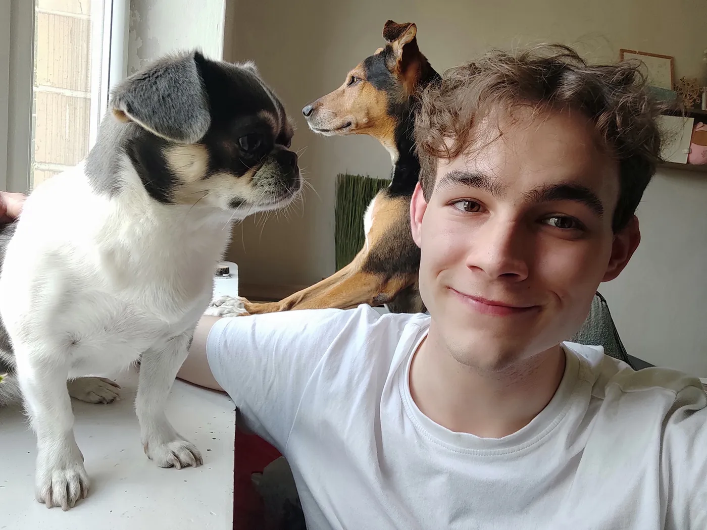
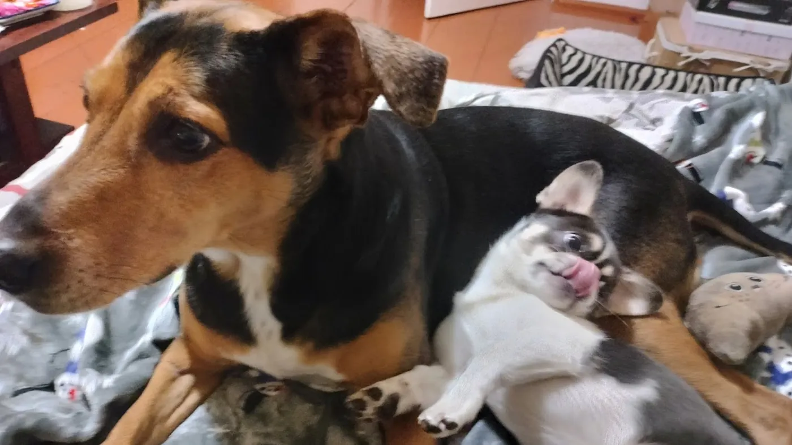

I am 22. I live in Radom and I drive a taxi ten to twelve hours a day. On 2 August I made the first commit of a game. Forty-eight days later it has five public versions, 474 commits, 1,418 automated tests and, in the build I am finishing now, a small city of 1,284 houses. On 13 September, the day version 0.4.0 went out, I added up what everything I have built in fifteen months has ever earned. It came to 70 zł.
This is not a page about how to do it. It is what it looked like, what it cost, and what I am going to do next. Every number was read from the repository or from my own posts on the day I wrote it.
Why a game, in the worst month for it
The end of July was heavy. A hard month at home, a new job behind the wheel, applications going out, and sixteen guides for my other project written in seven days. I hit the point where opening my own codebase felt like lifting something.
So I did the thing that sounds irresponsible. I opened Unity.
The first commit is called "Unity project scaffolding". It is dated 2 August 2026. I have played tycoon games for years, Game Dev Tycoon and Big Ambitions among them, and the one I wanted did not exist: a company that trains AI models, starting on the first day of 2022, when nobody knew yet how the next four years would go.
Before that game there was a longer road: a warehouse in the Netherlands, twelve dead projects, and a Windows monitor called PC Workman that has been on the Microsoft Store since July. This page starts where that one ends.

Forty-eight days, in order
The first commit
Scaffolding and assembly definitions. One rule set at the very start: the part of the game that decides anything must not import the engine. That is the reason 1,418 tests run today without opening a single scene.
Fifteen days in, it is playable
126 commits, around 70,000 lines of C#, 672 tests, 35 versions of the save format. Not finished. Playable. The same week I booked myself seventy hours of taxi, and for the first time in twenty weeks I missed one of my weekly posts.
The first public build
Twenty-nine days after the first commit. Six hours before release I opened the real game window for the first time and found the title bar off the top of the screen. That story, and the fear of shipping, is its own page. In five days 87 people downloaded it, and more than twenty of them had arrived through a guide about a failing SSD.
A stranger, through Google's AI
Somebody asked an AI for a hard simulation closer to Game Dev Tycoon, and the game came up. He played it and sent five things that were wrong, and one idea I had never written down: what if every action could be cancelled?
Rivals that sue you back, and a real map
A lab you smeared can now write, ring and take you to court. Twenty-three real world events land on the dates they happened. A real map of 177 countries, sound, music and 47 achievements.
A pen and a piece of paper
Samanta, my partner, played it for one evening and took notes. She found four things that 1,115 automated tests had not, including a paragraph I wrote that never once appeared in the game. She also wrote three music loops for it.
Three versions in one day
His list was finished two days before the date I had given him, and shipped on it. Anything running can be abandoned, and abandoning it costs. The opening can be skipped. The research tree became a board, offices are researched before they can be rented, and cards go into server cabinets by hand.
A city, offices with your name on the door, and a room that heats up
Finished and waiting for the release: the city of Bayview, both rented offices rebuilt with photographed materials and the company name over the entrance, and a server room with a shared heat budget, coolers and overclocking.


What it cost
Time
The taxi takes ten to twelve hours a day. The game gets what is left. The repository keeps the hour of every commit, and 64 of the 474 were made between midnight and four in the morning.
In August I booked seventy hours behind the wheel in one week. I spent the weekend before it making sure nothing I care about would need me: a release submitted to the Store, every version number aligned, the game submitted to IndieDB, a CV written from scratch. On the Sunday I wrote myself one line.
Nothing requires you this week.
Fourteen months of building, and I had never once been able to say that. A few days later I finished a twelve-hour shift, sat down, opened the file, looked at it, and closed the computer. That was the post I missed.
Money
| What | Amount |
|---|---|
| Everything my projects have earned, in fifteen months | 70 zł |
| The price of the game | 0, free on itch.io |
| The domain this page is on | 40 zł a year |
| Photographed floor and wall textures in the new offices | 0, CC0 from ambientCG |
| What pays for all of it | the taxi |
Seventy hours behind a wheel funds the move out of a house I need to leave. It does not move me toward the work I actually want to do. Every hour in the car is an hour not spent building, and every evening spent building is an evening not spent resting before the next shift.
People
The most expensive thing in this project is other people's evenings.
Samanta sat down with the game twice, once at the tutorial, where she found that the button under her cursor was being destroyed and rebuilt between the press and the release, and once with a pen and paper. A stranger called Gavat played it and sent five things that were wrong. Somebody else used the report form inside the game four times. None of them were paid. All of them changed what is in the build.
In July three people I had never met passed my CV to a company. I have not heard back from any of it. In August, after I wrote that down, two more people put my name in front of somebody. I still do not know how to repay that.

What the game actually is
Scaling Laws starts on 1 January 2022. You have twelve million dollars and no product. You train models, rent or buy compute, fund research, and try to still be trading years later, against fourteen rival labs, thirteen of them seeded from the real release timeline of 2022 to 2026.
The whole design is one sentence: you are not buying upgrades, you are timing them. Model quality runs on the real Chinchilla scaling law, roughly twenty tokens per parameter. Hardware loses value twice, once with the calendar and again when its successor launches. A company that ships one model and coasts is designed to fall behind.
One of the rivals is a small lab called E-Solutions, six people above a hardware shop in Radom, run by the cousin who walks you through the first hour. It is the only invented company on the board. The rest are parodies with dated histories. How the simulation works underneath is written down in full.

What happens next
If you know a team that hires for what somebody can build rather than what a CV already says, this is where to find me. If you want to see what the forty-eight days made, the game is free, and the report form reaches me directly.

Questions people ask
How long did it take to build Scaling Laws?
The first commit was on 2 August 2026. The first public build, 0.1.0, went out on 30 August after 29 days. Version 0.4.0 followed on 13 September. By 19 September, 48 days in, the repository held 474 commits and 1,418 EditMode plus 65 PlayMode tests, all built by one person in the evenings after taxi shifts.
How much has Scaling Laws earned?
The game is free on itch.io. Everything I have built in fifteen months, PC Workman included, had earned 70 zł in total when I added it up on 13 September 2026.
Can you build a game alone while working a full-time job?
In this case, yes, at a cost you can measure. 64 of the first 474 commits were made between midnight and four in the morning, and I missed my weekly post once in twenty weeks, after a twelve hour shift.
When is Scaling Laws coming to Steam?
A Steam release is planned for October to November 2026. Until then every build is free on itch.io.
Who makes Scaling Laws?
I do, alone: Marcin Firmuga, 22, from Radom, Poland, publishing as HCK Labs. I also built PC Workman, a Windows monitor with an offline AI assistant, on the Microsoft Store since 1 July 2026.